🎨 PhoneLayer Test Results Viewer
About These Tests
These tests demonstrate the apply_phone_mask.py script, which transfers transparency (like camera cutouts) from a reference phone case image to a target phone image. The script automatically detects phone boundaries and scales the transparency mask to fit different phone sizes.
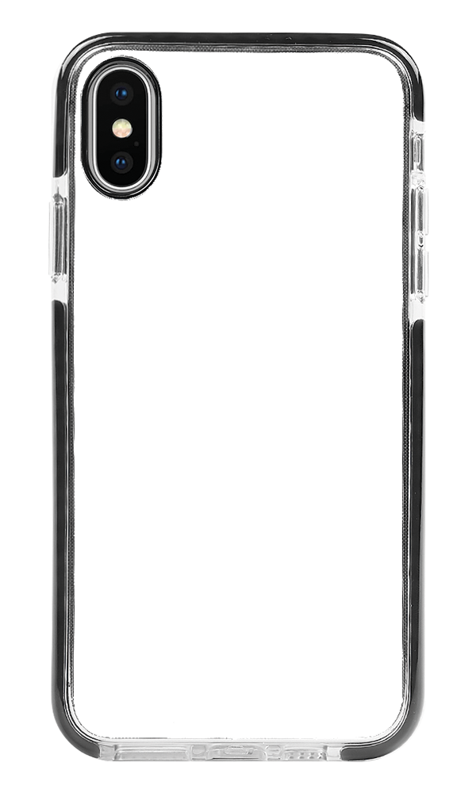
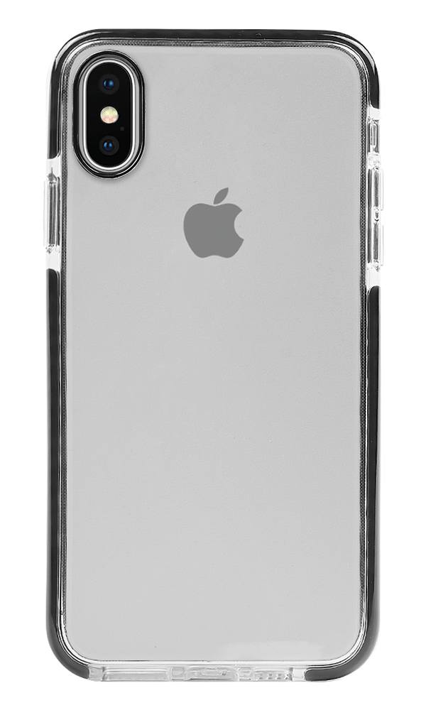
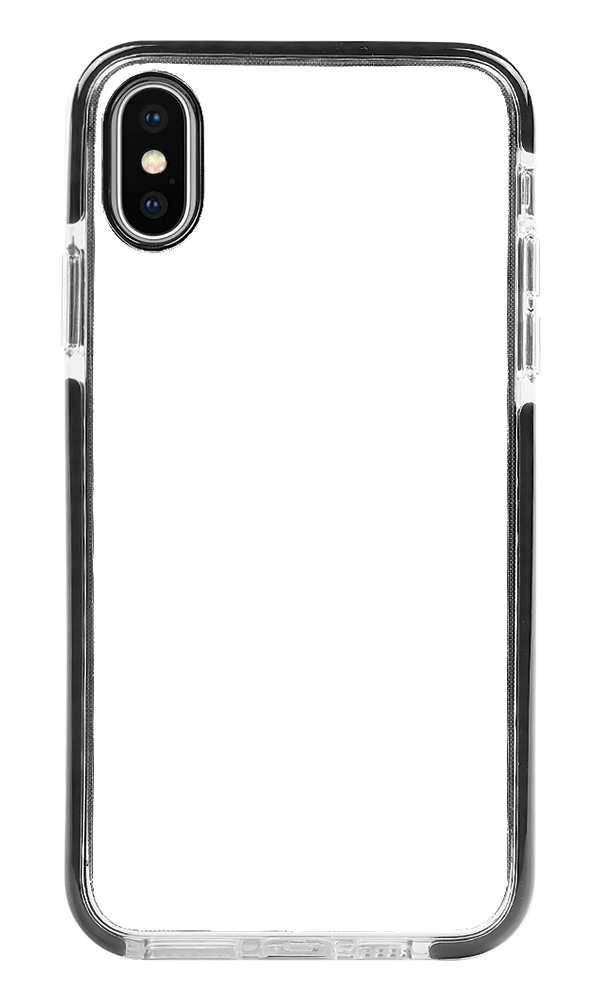
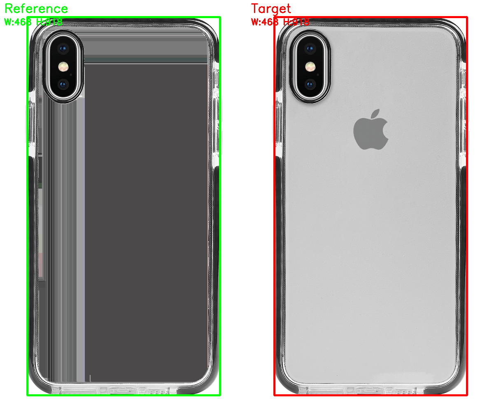

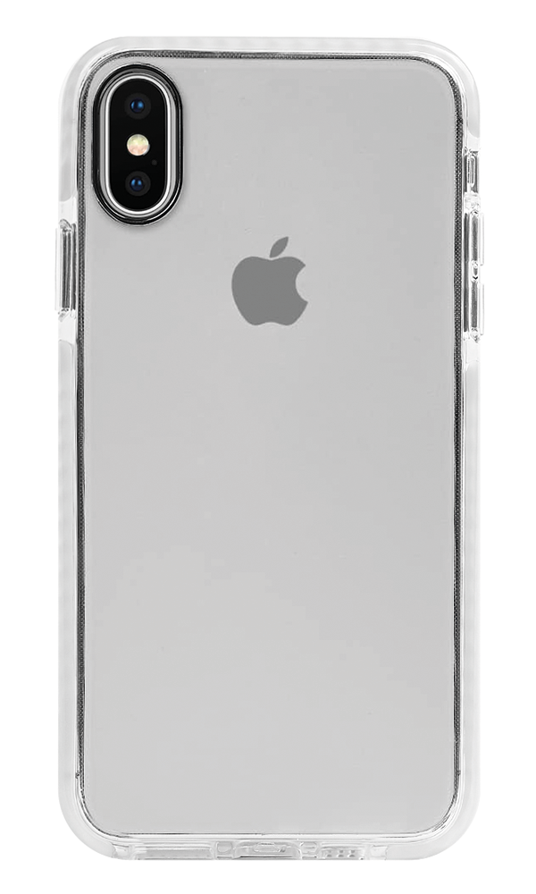
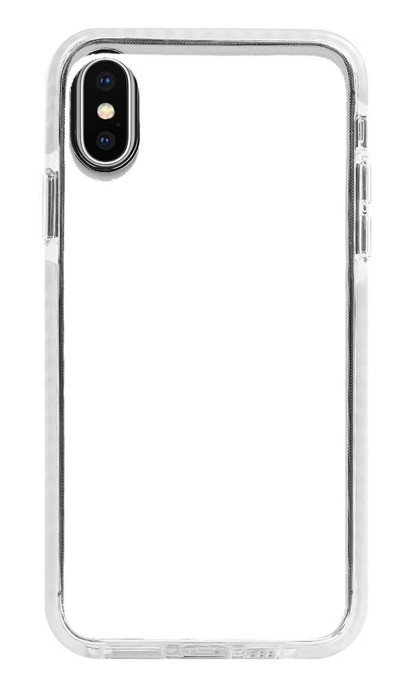
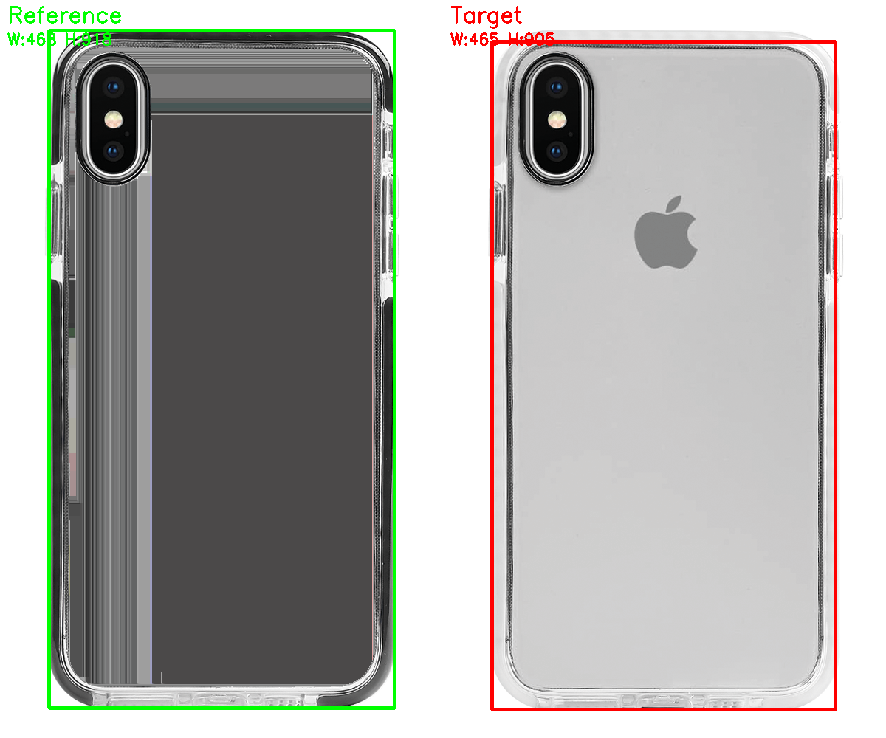
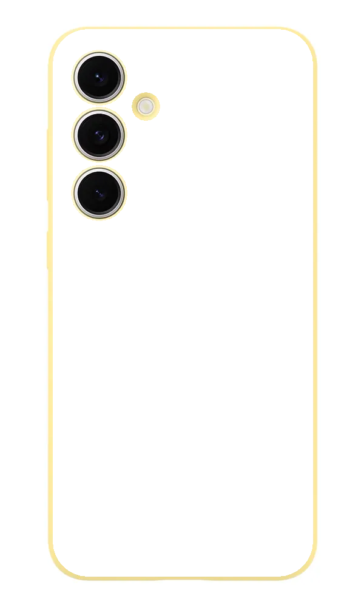
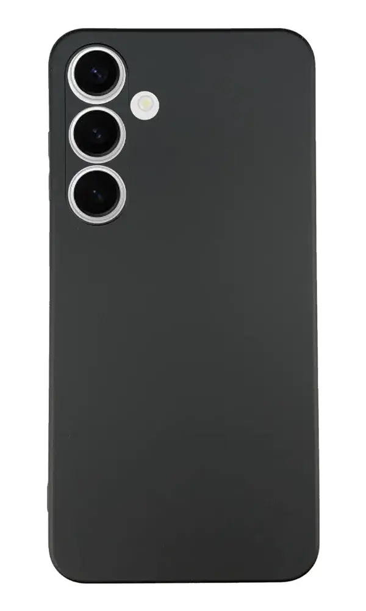
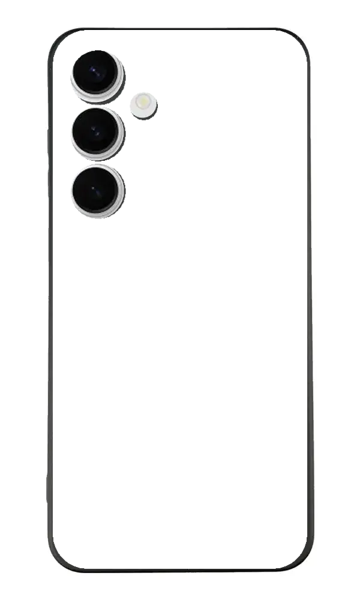
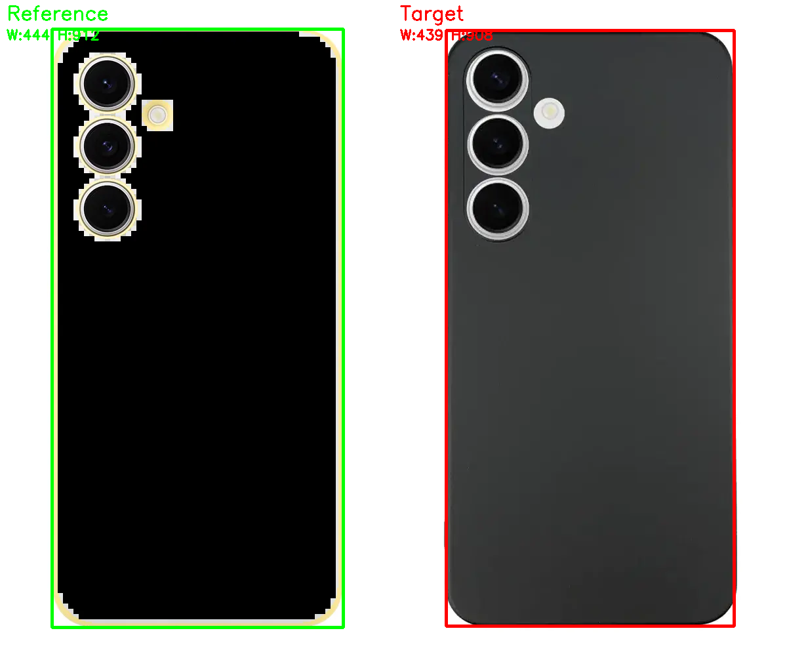
How to Read the Results
Reference: The source image with transparency (camera cutouts, etc.)
Target: The destination image without transparency
Output: The final result with transparency applied from reference
Debug: Shows detected phone boundaries (green=reference, red=target)